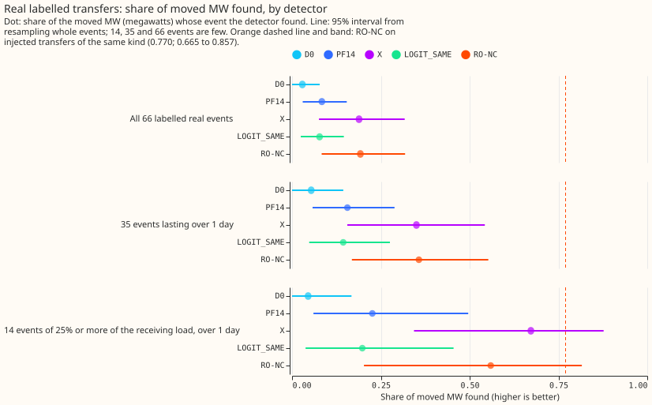
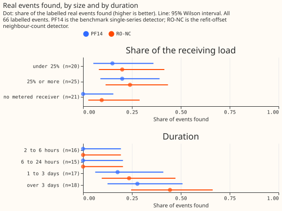

LSC detectors
The best switching detector, RO-NC, finds most of the moved power (the megawatts a transfer moves) of injected load transfers of 25% or more of the receiving load, but only about a third of that of the 35 real transfers lasting over 1 day, and no experiment yet shows that using a detector improves a forecast.
A load transfer is a switching operation that moves part of one Primary substation's demand onto neighbouring substations for hours or days. Detectors find these transfers from power readings alone. We score them on injected transfers, whose start, end, and size are known, and on 35 real transfers lasting over 1 day that a language model and a hand filter judged visible. The real transfers include 21 under 25% of the receiving load, so the two scores are not like for like. All results are from the lab, on 16 Primary series, and use hindsight to place the end of each transfer.

RO-NC and the refit-offset detector (X) find the most moved power on the 35 real transfers lasting over 1 day (RO-NC 0.357), and the 35 are too few to rank them. Source: experiment 101.
Does it work?
On injected transfers, RO-NC finds 0.770 of the moved power, against 0.656 for the benchmark PF14. The difference is +0.114 (+0.074 to +0.182; experiment 82). Neither part helps transfers lasting 15.6 to 60 days. Recall here is MW-weighted.
- Not ignoring alarms near the monthly refit of the demand model removes PF14's blind spot: a second model refitted half a month later gave +0.050 (+0.012 to +0.107), and lifting the suppression alone gave +0.056 (+0.016 to +0.113), so the second model adds nothing on injected transfers (experiment 71).
- Counting the neighbours that step the same way as the alarming substation: +0.048 (+0.021 to +0.096; experiment 70).
On real transfers, RO-NC finds fewer than injected transfers of the same step size and metering predict: 12 of the 35 lasting over 1 day (0.357 of their moved power; 0.169 to 0.553), against 18.8 expected, and none of the 31 shorter ones. On the 14 real transfers of 25% or more of the receiving load, it finds 0.559 (0.203 to 0.816), an interval that includes 0.770, so that band alone shows no gap, but it finds 6 of those 14 where 10.5 are expected. Of the 35, 6 sit where the detector's residual panel holds no readings and 12 have a step under 4 noise units, and even the 17 with readings and a larger step are found less often than injected ones; the verdict is partly supported (experiment 101).

RO-NC finds none of the real transfers shorter than 1 day, and more of those moving 25% or more of the receiving load than of those without a metered receiver (all 66 real transfers).
RO-NC misses small steps, mostly where the receiver is unmetered. Of the 35 real transfers over 1 day, it finds 6 of 14 of 25% or more of the receiving load and 2 of 10 with no metered receiver. Among injected transfers that step by 4 noise units or more, the single-series detector D0 found 0.56 with a metered receiver and 0.35 without (experiment 58). Before the PF14 end rule, a wrong interval end was most of D0's misses among large transfers with a metered receiver, and about a third of its misses among transfers with a donor step of 6 noise units or more (experiment 59, experiment 60).
The early detectors D0 and D1 each found under a fifth of 600 injected transfers (experiment 43). Moving D0's interval end to the strongest opposite step found +0.191 more (+0.148 to +0.237; experiment 61), and the post hoc rule PF14 did better (0.688 against 0.646, no paired interval; experiment 66).
The changes listed here found no clear gain. Each was tested against a detector without it, at the same number of unexplained alarms. Refuted: several averaging windows (experiment 59), profile-weighted steps (experiment 60), whitening the residual (experiment 62), scoring onset and return steps as a pair (experiment 61), and one joint fit across substations (experiment 67). Inconclusive or partly supported: a bank-holiday column (experiment 47), a neighbour veto (experiments 55 and 58), refitting without detected transfers (experiment 68), solar and heating corrections (experiment 98), a joint linear fit of solar and transfer terms (experiment 63, of the differentiable-physics demand sub-theme), and accepting weaker onset alarms (experiment 69), and adding neighbours' opposite-sign steps to a substation's own step (+0.019, -0.011 to +0.062; experiment 65).
Using a detector has not yet improved a forecast, in one validation year (experiments 44 and 86) or four (experiment 38) on 16 Primary series. In each result below, a positive change means a worse forecast.
- Masking: leaving the half-hours that D1 flags out of the 7-day error correction of the stack (experiment 17's H0.5 proxy, with a half-life of 0.5 years) raised the tail error outside logged switching by 57% (0.4% to 134%), because one interval ran for 60 days. A mask from NGED's logs lowered it on the 14-day correction by 8.9% (-21.8% to 0.0%), 95% of that in one closure (experiment 38).
- Ceiling: in the band of events the labeller finds most reliably (3 of the 16 Primaries), a perfect detector would lower the best guess's quantile score by 0.42% (-0.47% to 1.96%) (experiment 44).
- Corrected lags: lags corrected with RO-NC's labels raised the score by 0.056 points of
capacity outside switching (0.016 to 0.126)
and did not lower it inside logged events (experiment
86, of the
switching-labels-in-the-forecasttheme).
Best design so far
RO-NC is PF14 with two changes (experiment 82).
- Subtract an XGBoost demand model's forecast, which uses no past power, from each Primary's power, and refit the model monthly.
- Take the 24-hour step of that residual from whichever of two such models, refitted half a month apart, did not refit within 24 hours of the stamp. Lifting the suppression alone does as well on injected transfers (experiment 71), but RO-NC was tested only with two models.
- Score each candidate alarm with a logistic regression on its own step, the largest opposite neighbour step, the number of neighbours, and the number that step the same way.
- Set the threshold to allow 80 unexplained alarms over all 16 Primary series on odd months, and end each interval at the first opposite step of at least half the onset step.
Candidates for production
Nothing is ready for the serving path. Experiments 70, 71, and 82 are marked candidate, but
each is training-time only: the residual uses ERA5 weather,
which arrives about 5 days after the event, and the end rule uses hindsight.
- Experiment 71: +0.050 on injected transfers. Experiment 70: +0.048, unconfirmed on real transfers (7 found against 8 for PF14). Experiment 82: +0.114, and 12 against 8 on the 35 real transfers, a weak signal.
- An untested option is to run RO-NC retrospectively to build a table of switching events for NGED. Experiment 44 found that a perfect detector would improve the best guess's quantile score by little, so the table would serve NGED's own use of the events (roadmap page: switching events).
Gotchas and implementation details
- Count events, not half-hours, and show every event. In experiment 37, 99.9% of the stack's confirmed tail score lay on two series, almost all in one 370-hour closure, and in experiment 38 one closure in January 2026 held 95% to 105% of every masking gain (experiment 37, experiment 38). A pooled half-hour total then reads as many closures when it is one. Re-check on a longer period or other series.
- Match the unexplained-alarm count on every month a rule reads. A threshold matched on odd months left even months 15% under the first round's alarm count (experiment 68), and a shared threshold grid left D0 at 0.14 alarms per series-month and D1 at 0.38 (experiment 37). Otherwise a detector looks better by raising more alarms. Re-check if the demand model or period changes.
- Spread injected transfers across series and time before training on them. Experiment 58's 620 even-month transfers shrank to 103 once no two on one series lay within 1 day (experiment 68). Otherwise a few overlapping events count many times. Re-check if the injection sampler changes.
- Compare like with like when quoting injected and real recall. 0.770 is MW-weighted recall on large injected transfers, and 0.34 is a count over all 35 real transfers, 21 of them under 25% of the receiving load (experiment 101). Otherwise a gap the sample cannot show is reported as a finding. Re-check if the labelled real set grows.
- Score on several injection shapes and by donor step. Recall depends on the donor step in noise units (experiment 58), and experiment 60 tested one step statistic on five shapes. Otherwise a mix of small and large steps hides which transfers are missed. Re-check if the injection builds transfers a new way.
- Interval ends need hindsight. The strongest-opposite-step end rule needs up to 14 days of later data (experiment 65), and an interval that started at a return step ran for 60 days (experiment 38). Otherwise a detector scored with hindsight is mistaken for one that could run live. Re-check when a detector is run on live data, or an end rule without hindsight is tried.
- Recompute
moved_share_of_receiverbefore scoring against the experiment 41 labels. 62 of 81 stored values are NaN, partly because series ids were written as strings (experiment 44). Otherwise a filter on that column silently drops most events. Re-check if the labelled set is rebuilt.
What we have not settled
- Whether any detector finds real transfers with a step under 4 noise units, or shorter than 1 day.
- How RO-NC does on real transfers once the readings missing for two Primary substations are restored.
- Whether the detector's labels improve a forecast of the normal running arrangement; the logged events in experiment 86 are too few to show it.
The Research plan lists what is planned next, and the Experiments page lists every experiment.